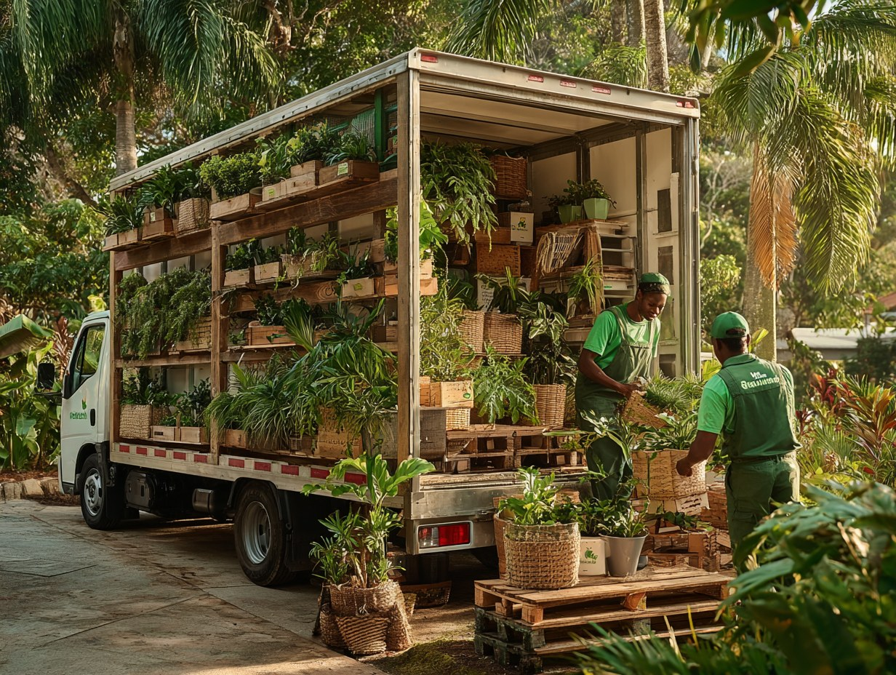

Livraison jardinerie Guadeloupe : à domicile partout
Terreau, mobilier, piscine en kit, gros arbres : la livraison jardinerie Guadeloupe de Jardiland vous livre directement chez vous. Un service pensé pour vos achats volumineux ou lourds, partout sur l'île.
En Guadeloupe, transporter un salon de jardin ou une palette de terreau dans une voiture personnelle est rarement réaliste. Notre service de livraison s'appuie sur une logistique 100 % locale et des équipes qui connaissent chaque commune.

Une livraison locale, partout en Guadeloupe
Pas d'intermédiaire ni de relai opaque : on charge en magasin, on vient chez vous.
Pourquoi une livraison de jardinerie locale
Une logistique locale, c'est des délais maîtrisés, des équipes joignables et une vraie connaissance du terrain. Notre livraison jardinerie est conçue pour les gros volumes que vous ne pouvez pas transporter vous-même.
Ce que comprend la livraison à domicile
Mobilier de jardin, barbecues et planchas, piscines en kit, terreaux et palettes, outillage motorisé, et la livraison plantes Guadeloupe pour vos gros conteneurs et arbres fruitiers. Le tout déposé au bon endroit.
Comment se passe la livraison
Un processus simple et transparent, cadré avec un conseiller.
Les trois étapes de la livraison
D'abord, vous identifiez vos achats en magasin et le devis livraison est calculé sur place. Ensuite, nous convenons d'une date et d'un créneau qui vous arrangent. Enfin, notre équipe livre et dépose au bon endroit, avec une aide à la mise en place si besoin.
Tarifs et zones de livraison
Nous livrons toute la Guadeloupe continentale depuis Baie-Mahault et Les Abymes : Grande-Terre, Basse-Terre et les communes intermédiaires. Le tarif dépend du volume et de la distance ; un devis vous est remis en magasin ou par téléphone.
Vos questions, nos réponses
Livrez-vous partout en Guadeloupe ?
Oui, sur l'ensemble de la Guadeloupe continentale. Nos équipes connaissent chaque commune, de Grande-Terre à Basse-Terre, et adaptent la tournée à votre adresse.
Quels sont les délais de livraison ?
Les livraisons s'effectuent généralement sous 5 à 10 jours selon la période et la nature des produits. En forte affluence, les délais peuvent s'allonger : nous vous donnons toujours une estimation honnête à la commande.
Combien coûte la livraison ?
Elle est facturée selon le volume et la zone géographique. Demandez votre devis personnalisé en magasin ou par téléphone, à Baie-Mahault comme aux Abymes.
Venez nous rendre visite en magasin
Baie-Mahault ou Les Abymes : nos 25 conseillers vous attendent six jours sur sept.
Voir nos magasins